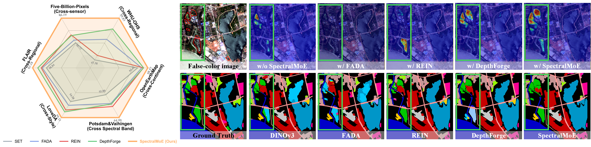
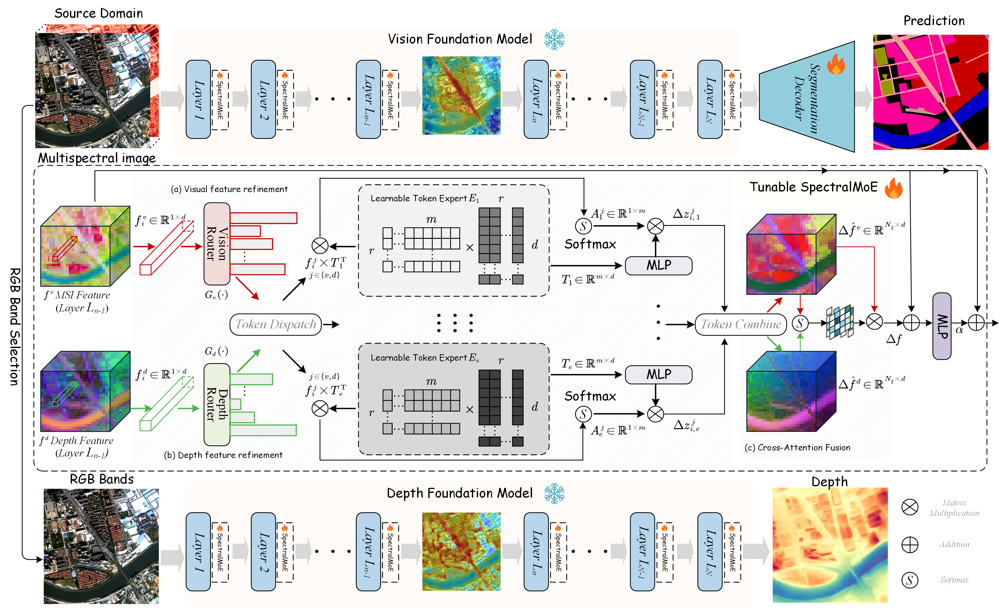

Abstract
Domain Generalization Semantic Segmentation (DGSS) in spectral remote sensing is severely challenged by spectral shifts across diverse acquisition conditions, which cause significant performance degradation for models deployed in unseen domains. While fine-tuning foundation models is a promising direction, existing methods employ global, homogeneous adjustments. This "one-size-fits-all" tuning struggles with the spatial heterogeneity of land cover, causing semantic confusion. We argue that the key to robust DGSS lies not in a single global adaptation, but in performing fine-grained, spatially-adaptive refinement of a foundation model's features. To achieve this, we propose SpectralMoE, a novel fine-tuning framework for DGSS. It operationalizes this principle by utilizing a Mixture-of-Experts (MoE) architecture to perform local precise refinement on the foundation model's features, incorporating depth features estimated from selected RGB bands of the spectral remote sensing imagery to guide the fine-tuning process. Specifically, SpectralMoE employs a dual-gated MoE architecture that independently routes visual and depth features to top-k selected experts for specialized refinement, enabling modality-specific adjustments. A subsequent cross-attention mechanism then judiciously fuses the refined structural cues into the visual stream, mitigating semantic ambiguities caused by spectral variations. Extensive experiments show that SpectralMoE sets a new state-of-the-art on multiple DGSS benchmarks across hyperspectral, multispectral, and RGB remote sensing imagery.

Method Overview

Experiments
.png)
Citation
@article{chen2026local,
title={Local Precise Refinement: A Dual-Gated Mixture-of-Experts for Enhancing Foundation Model Generalization against Spectral Shifts},
author={Chen, Xi and Zhang, Maojun and Liu, Yu and Yan, Shen},
journal={arXiv preprint arXiv:2603.13352},
year={2026}
}Acknowledgements
Our implementation is mainly based on following repositories. Thanks for their authors.